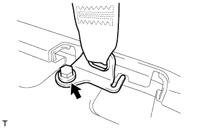
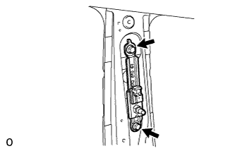

ПЕРЕДНИЙ РЕМЕНЬ С КАТУШКОЙ И ПРЕДНАТЯЖИТЕЛЕМ В СБОРЕ (для 3-дверной модели) > СНЯТИЕ |
| 1. ОТСОЕДИНИТЕ ПРОВОД ОТ ОТРИЦАТЕЛЬНОГО ВЫВОДА АККУМУЛЯТОРНОЙ БАТАРЕИ |
| 2. СНИМИТЕ ОПОРНУЮ НАКЛАДКУ ЛЕВОЙ ДВЕРИ В СБОРЕ |
 |
Наклейте защитную ленту вокруг опорной накладки двери.
С помощью отвертки освободите 4 фиксатора, 10 захватов и 2 направляющих и снимите опорную накладку двери.
| *1 | Защитная клейкая лента |
| 3. СНИМИТЕ УПЛОТНИТЕЛЬ ОБШИВКИ ПРОЕМА ЛЕВОЙ ПЕРЕДНЕЙ ДВЕРИ |
Частично снимите уплотнитель обшивки проема передней двери так, чтобы можно было снять нижнюю облицовочную накладку средней стойки кузова и облицовочную накладку средней стойки кузова (Нажмите здесь).
| 4. СНИМИТЕ ЗАДНЮЮ КРЫШКУ В СБОРЕ (для моделей с задней крышкой) |
Снимите заднюю крышку.
| 5. СНИМИТЕ ЗАДНЮЮ ОПОРНУЮ ПЛАСТИНУ КОВРИКА ЗАДНЕГО ПОЛА |
 |
Выверните 5 винтов.
Освободите 6 захватов и снимите заднюю опорную пластину коврика заднего пола.
| 6. СНИМИТЕ КРЫШКУ ОТВЕРСТИЯ В ЛЕВОЙ ЗАДНЕЙ БОКОВОЙ ОБЛИЦОВОЧНОЙ НАКЛАДКЕ |
 |
Освободите 2 захвата и 2 направляющих и снимите крышку отверстия в задней боковой облицовочной панели.
| 7. СНИМИТЕ ЗАДНИЙ НАПОЛЬНЫЙ КОВРИК |
Освободите 4 захвата и снимите задний напольный коврик.

| *A | для моделей без направляющей полки багажного отделения | *B | для моделей с направляющей полки багажного отделения |
| *C | Для сидений с противоположным расположением | - | - |
| 8. СНИМИТЕ ЗАЩЕЛКУ ОБЛИЦОВКИ БАГАЖНОГО ОТДЕЛЕНИЯ № 1 |
 |
Снимите защелку облицовочной панели багажного отделения, повернув ее по часовой стрелке.
| 9. СНИМИТЕ КОЛПАЧОК КРЕПЛЕНИЯ ЗАДНЕЙ КРЫШКИ № 1 (для моделей без задней крышки) |
 |
С помощью отвертки освободите 2 захвата и снимите колпачок крепления задней крышки.
| *1 | Защитная клейкая лента |
| 10. СНИМИТЕ ПЕРЕДНЮЮ БОКОВУЮ ОБЛИЦОВОЧНУЮ НАКЛАДКУ ПОЛКИ БАГАЖНОГО ОТДЕЛЕНИЯ (для моделей с задней крышкой) |
 |
С помощью отвертки освободите 2 захвата и снимите переднюю боковую облицовочную накладку полки багажного отделения.
| *1 | Защитная клейкая лента |
| 11. СНИМИТЕ НАКЛАДКУ КРЕПЛЕНИЯ ПОЯСНОГО РЕМНЯ БЕЗОПАСНОСТИ |
 |
Освободите 3 захвата и снимите накладку крепления поясного ремня безопасности.
| 12. СНИМИТЕ ЛЕВУЮ БОКОВУЮ ОБЛИЦОВОЧНУЮ ПАНЕЛЬ ПОЛКИ БАГАЖНОГО ОТДЕЛЕНИЯ В СБОРЕ |
 |
Выверните болт и отсоедините напольное крепление ремня безопасности переднего сиденья.
|  |
Выверните болт и отсоедините напольное крепление ремня безопасности заднего сиденья № 1.
Выверните 3 болтов и 2 винта.
Освободите 9 захватов и 12 фиксаторов и снимите боковую облицовочную панель полки багажного отделения.

| 13. СНИМИТЕ ЛЕВУЮ НАРУЖНУЮ ПЕРЕДНЮЮ ОБЛИЦОВОЧНУЮ ПАНЕЛЬ В СБОРЕ |
Переместите регулятор плечевого крепления переднего ремня безопасности в крайнее нижнее положение.
Выверните болт.
Открепите 2 фиксатора и 2 направляющие.
Пропустите напольное крепление ремня безопасности переднего сиденья через переднюю боковую облицовочную панель и снимите переднюю боковую облицовочную панель.
| 14. СНИМИТЕ ПЕРЕДНИЙ РЕМЕНЬ С КАТУШКОЙ И ПРЕДНАТЯЖИТЕЛЕМ В СБОРЕ |
 |
Отверните гайку и снимите плечевое крепление.
 |
Отсоедините разъем преднатяжителя A, как показано на рисунке.
Для моделей с предаварийной системой безопасности:
Отсоедините разъем предаварийной системы безопасности B.
 |
Выверните болт и снимите замок ремня безопасности.
| 15. СНИМИТЕ НАКЛАДКУ ПЛЕЧЕВОГО КРЕПЛЕНИЯ ПЕРЕДНЕГО РЕМНЯ БЕЗОПАСНОСТИ В СБОРЕ |
|  |
Выверните 2 болта и снимите накладку крепления.